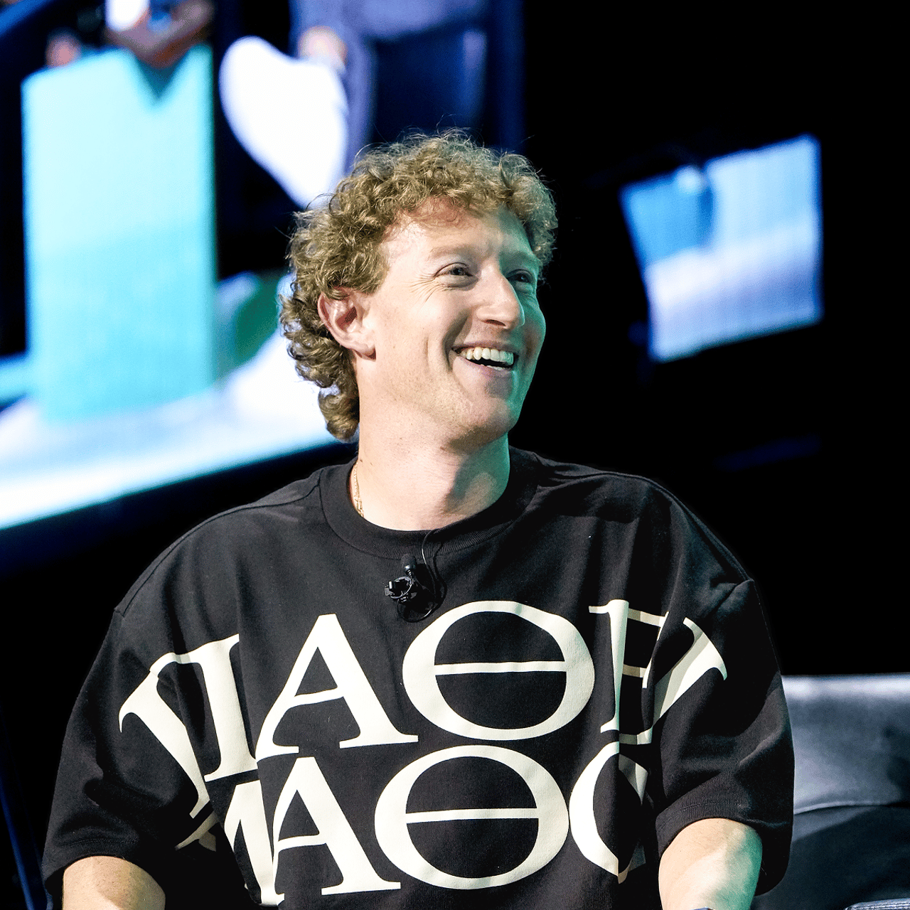
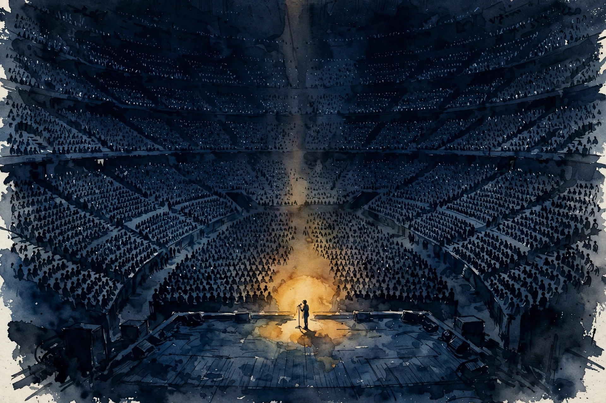
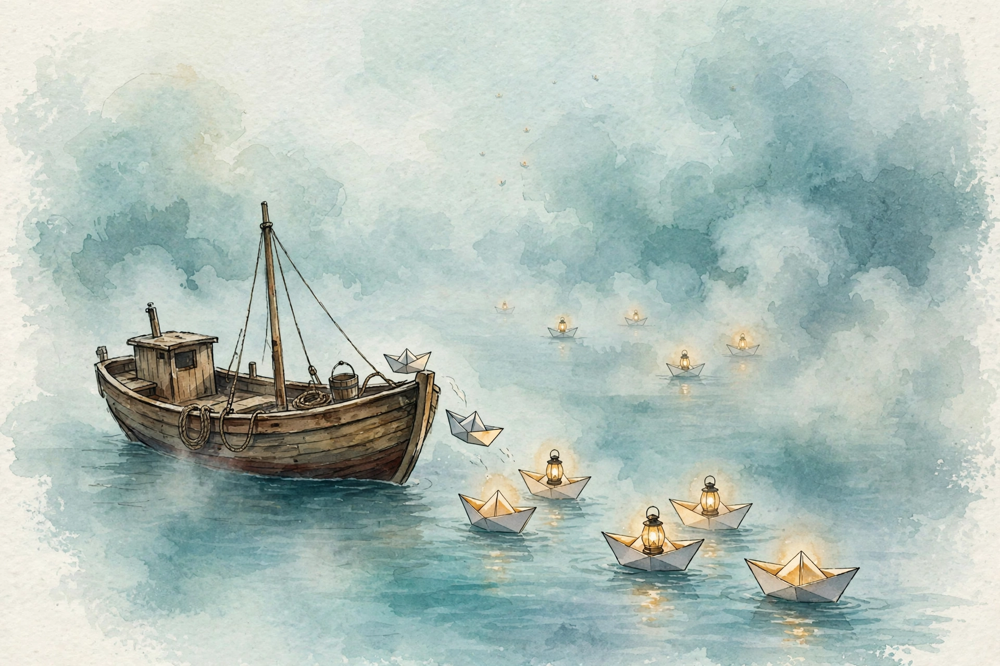

Acquired · Episode 3 · Companion
The Mark Zuckerberg Interview
At Chase Center on September 10, 2024, Mark Zuckerberg did an unprecedented thing: a live conversation in front of 6,000 people on Meta's strategy, early Facebook history, and the future of AI, VR, and AR. This companion follows the night chapter by chapter.

Photo. Mark Zuckerberg at Chase Center, September 2024, in the Pathé Mathos shirt. Source: acquired.fm (official episode artwork).
Watch. The official Acquired episode video (1 hr 27 min). Times below are proportional estimates from the transcript.
The Wisdom Index: every nugget in this companion
Source fact A claim from the episode transcript. Interpretation My read on what it means. Times marked ~ are proportional estimates from word position, since the transcript has no timestamps.
~00:03
He Did Not Try to Start a Company

Illustration. Chase Center: one founder, six thousand people, no script. AI-generated watercolor.
Source fact Ben asks the Jensen question: knowing what you know now, would you still start Facebook? Mark's answer is honest. The early startup years were not fun. Everything could die at any moment. He does not wish to relive them. It is good, he says, that humans underestimate how painful things will be, or nobody would do good things.
Then the twist: he did not try to start Facebook. In school he built about 12 different things he wanted to exist. He came to Silicon Valley with Dustin Moskovitz and a handful of people because that is where startups came from. Driving down Highway 101 past eBay and Yahoo, he thought: one day maybe we will build a company like this. Facebook already had scale, and he still thought of it as a great project, not a company. He lacked the ambition to turn it into one. It just happened.
His summary line: hated being a startup and wanted to stop being a startup as fast as possible
. He is, Ben notes, the iconic startup founder of the century, and he wanted out of startup-ness immediately. What he wanted was a going concern: cash-generative, durable, able to fund the next idea without selling the company.
Nugget 1 · Beginnings
He did not try to start a company
What happened. Mark built 12 things in school because he wanted them to exist. Facebook was a project with scale, not a company with ambition. He wanted a going concern as fast as possible, not startup life.
Why it matters. Wanting out of startup-ness drove every durable decision after: revenue early, control kept, 20-year bets funded from cash flow. The exit from startup mode was the strategy.
The principle. Build the thing you want to exist. Then convert it into a going concern fast, so the project never has to die for money.
~00:23
Why Meta Kept Winning: The Formula
Source fact Ben's question for the night: why has Meta worked so spectacularly well through wave after wave that was supposed to kill it? He names them: MySpace, first-generation Twitter, Instagram, Snapchat, WhatsApp, TikTok, Apple's App Tracking Transparency, ChatGPT. Eight named waves, though Ben says that is nine. He seems to double-count Apple ATT, which he calls out as its own category.
Mark's answer has three parts.
First, identity. Meta defines itself as a technology company focused on human connection, not as a specific type of app. Building glasses that let people feel present with each other is, to him, the natural continuation of the apps. How you define yourself determines what you are allowed to become. Companies that define themselves as one thing cannot cross platforms.
Second, real technical depth. Mark was an engineer. He took systems engineering classes. He observed that most companies calling themselves technology companies were not. The CEO was not technical, the board had nobody technical, one head of engineering carried it all. At Meta, the management team is heavily technical across product groups. Friendster and MySpace died partly on graph computation: calculating who-knows-whom at scale is brutally hard. Meta held itself to a technology lead over everyone else, because the product is just an implementation on top of the foundation.
Third, the learn-faster loop. Mark's formula: learn faster than every other company
. Ship early, get feedback, learn what people actually want, ship again. By version three, four, or five, and versions are not even discrete, they ship so often, the product is better because it absorbed more reality than any competitor's.
Interpretation Ben adds the strategy gloss: Mark plays the company like a turn-based strategy game. Get more turns than anyone else. Learn more from each turn than the next player.
The waves that were supposed to kill Meta
Eight named threats, one survivor. Hover for the death sentence each one carried.
Source: Acquired, The Mark Zuckerberg Interview, ~00:23. Ben counts nine. Eight are named.
Nugget 2 · Identity
Define yourself by the mission, not the app
What happened. Meta never defined itself as a website or a social network. It defined itself as a technology company focused on human connection. Glasses, AI, and VR all fit that definition.
Why it matters. None of the eight waves killed Meta, because Meta was never the app under attack. It was the learning machine underneath. Identity set the boundaries of allowed moves.
The principle. Define the company by the human need, not the current product. The definition decides what you may become.
Nugget 3 · Speed
Learn faster than everyone
What happened. Meta's loop: ship early, absorb real feedback, ship again. Versions blur together because shipping never stops. By version five the product absorbed more reality than any competitor's.
Why it matters. Speed of learning beats quality of first guess. Every wave that was supposed to kill Meta lost to a company that took more turns.
The principle. Play the turn-based game: more turns than anyone else, more learning per turn. The fastest learner wins.
Toy: the turns game
Meta's formula as a machine. Set how often you ship versus a competitor, and watch the learning gap compound over five years.
~00:30
Ship Before You Are Proud

Illustration. Ship early, learn from the fog, ship again. AI-generated watercolor.
Source fact The culture behind the loop is explicit: value shipping and feedback more than praise. Mark says many internal conversations sit near the line of embarrassment about what they release. Not shipping things they think are bad. Shipping things early enough to learn what they are actually for. With AI especially, the technology is clearly transformative and the first valuable use cases are unclear, so the only way to find out is to ship and watch where it resonates.
He contrasts this with Apple: long polish cycles, ship when perfect. That works for Apple and fits its culture. It is the opposite of Meta's. The price of Meta's way is small brand damage with every early ship. The price of waiting is feedback time you can never recover.
The decision rule: if you want praise every time you ship, you will ship too late to learn.
Nugget 4 · Culture
Ship near embarrassment
What happened. Meta ships early enough to learn what a product is actually for, accepting small brand damage per ship. Apple polishes until perfect and ships late.
Why it matters. Learning time is the one asset you cannot buy back. Every month of polish is a month of reality absorbed by someone else.
The principle. Price the two errors: small embarrassment now versus lost learning forever. If you need praise per ship, you ship too late.
~00:35
Invention Versus Discovery
Source fact David asks whether product creation is invention, you conceive it fully then build it, or discovery, the statue is inside the marble and you chip away with feedback until it appears. Mark says it is a combination, and each side alone fails.
Pure discovery, shipping only what resonates, gives you no conviction to push through hard things. Pure invention, building only your vision, never finds product-market fit because you are not focused on customers. You need values about what should exist matched against what actually resonates.
Examples: News Feed in 2006 was closer to invention. Before it, social networks were profiles. Nobody asked for a feed, and showing people updates turned out to be what they wanted. Stories was closer to discovery: Snapchat found the format, Meta learned from it and built the better version. Mark is unembarrassed about this: there are more smart people outside the company than inside it. If you do not learn from the market, you ignore free signal.
Nugget 5 · Product
Invention needs discovery
What happened. News Feed was invention: nobody asked for it. Stories was discovery: Snapchat found the format, Meta built the better version. Mark runs both halves without shame.
Why it matters. Invention alone never finds fit. Discovery alone has no backbone for hard things. The combination gives conviction plus reality.
The principle. Hold values about what should exist, then let the market correct you. Learn from everyone outside the building.
~00:38
Open Source as Strategy
Source fact Ben proposes that Meta is the largest beneficiary of open source in the modern world. The strategic logic is second-mover logic. Google built distributed computing infrastructure first and kept it proprietary, because it was an advantage. Meta needed the same infrastructure, built it second, and realized keeping it closed bought nothing against Google. So they open-sourced it. Open Compute became the industry standard. The supply chain standardized around Meta's designs. Result: vastly more supply, cheaper hardware, higher quality, billions of dollars saved.
Llama follows the same logic. Meta wants guaranteed access to a leading AI model. Platform owners burned Meta too many times for it to depend on anyone else now. It is big enough to build its own core technology. But AI models are ecosystems, and ecosystems get better when others use them. Open-sourcing Llama builds the ecosystem around Meta's stack, exactly as Open Compute did for hardware.
Interpretation The trap to avoid: open-sourcing your actual differentiator. Meta open-sources infrastructure and models, not the social graph or the ranking systems that monetize it.
Nugget 6 · Strategy
Open-source what is not the differentiator
What happened. Meta built infrastructure second, open-sourced it, and watched it become the industry standard. Suppliers standardized on Meta's designs. Costs fell by billions. Llama repeats the play for AI models.
Why it matters. Open-sourcing what is not your edge commoditizes your supplier's market in your favor. The standard becomes your moat's foundation.
The principle. Keep the differentiator closed. Open everything else, and let the ecosystem do your cost cutting.
~00:41
The Year-and-a-Half Mistake
Source fact In 2012, Facebook on mobile was HTML5 inside a native shell. The reasoning: Meta's culture was web iteration, ship daily. App stores meant building separately for iPhone, Android, BlackBerry, and Windows Mobile, then waiting weeks for approval. The plan: build one web platform, ship once, update everywhere daily. Velocity would beat nativeness.
They were wrong. Native integration turned out to be critical for how interactions feel. So they rewrote the apps from scratch and, crucially, paused all feature development for about a year. Mark cites Netscape: rewrites that also add features never terminate. The only safe rewrite is a pure rewrite.
The timing was brutal. Mobile grew fast and earned zero revenue. The company went public at a 100 billion dollar market cap and lost half of it in three months.
What decides, Mark says, is pain tolerance. When you lose, the right move is usually clear. The question is whether you have the pain tolerance to do it. A year and a half of pain, then they emerged in great shape. In retrospect, he says, getting cut in half for a year and a half looks quaint. Later they would lose 80 percent.
Two drawdowns
Both looked fatal at the time. Hover for detail.
Source: Acquired, The Mark Zuckerberg Interview, ~00:41 and ~01:04.
Nugget 7 · Rewrites
The pure rewrite rule
What happened. Meta paused all feature work for about a year to rewrite mobile apps natively. Mark's rule from Netscape: rewrites that also add features never terminate. Only a pure rewrite ships.
Why it matters. The rewrite cost half the market cap for a year and a half. It also saved the company. Half-measures would have cost the same pain with no result.
The principle. When you must rewrite, freeze features and rewrite purely. Mixed rewrites never end.
Nugget 8 · Adversity
Defeat makes the move obvious
What happened. When Meta lost, the fix was clear: rewrite mobile, endure the pain. The scarce resource was not insight but pain tolerance.
Why it matters. It is harder to know what to do when you win. Jumping from one local hill to a taller one is culturally hard. Defeat removes the ambiguity.
The principle. When losing, act on the obvious move and budget the pain. When winning, manufacture the urgency losing gives you for free.
~00:46
The 20-Year Mistake
Source fact Ben asks for the most legitimate criticism. Mark names the political miscalculation. Before 2016, outside the IPO period, public sentiment about the company was positive essentially every month. After the 2016 election, it was negative essentially every month for years.
His diagnosis: he treated a political crisis as a corporate crisis. The corporate instinct is to take ownership: something is wrong, we will fix it. But many attackers were not operating in good faith. They wanted someone to blame. Accepting responsibility for things Meta did not do became an invitation to be kicked for more.
the political miscalculation was a 20-year mistake
Mark Zuckerberg · Episode ~00:46
It started in 2016, and he estimates another 10 years to fully work through it before the brand recovers. The operational lesson: fund independent academic research before you need it. When you are accused of something, defending yourself is not credible. Third-party researchers debating the evidence is.
Two mistakes, two timescales
Technical mistakes heal in years. Category mistakes heal in decades. Hover for detail.
Source: Acquired, The Mark Zuckerberg Interview, ~00:46.
Nugget 9 · Crises
The 20-year mistake
What happened. After 2016, Mark treated a political crisis as a corporate crisis and accepted blame for things Meta did not do. Each acceptance invited more kicking. He prices the recovery at 20 years.
Why it matters. Corporate playbooks fail in political fights. Ownership is a virtue in product crises and a vulnerability in bad-faith ones.
The principle. Name exactly which accusations you own and which you do not, firmly and early. Fund independent research before you need it.
~00:52
Control: The Yahoo Billion
Source fact In 2006, Yahoo offered 1 billion dollars for Facebook. Everyone on the management team wanted to sell. The board tried to fire Mark. His failure, by his own account: he had not communicated a long-term vision, because he was not thinking in terms of a company at all. He could not articulate why turning down the money was right. Understandably, the team wanted their startup dream payout.
Afterward, he fixed the governance so it would be harder to fire him for wanting to build. Super-voting shares. Mark is explicit about what control buys: the ability to make 10-to-20-year bets that no hired CEO could survive. Reality Labs, 50 billion dollars and counting, exists because he controls the company.
Nugget 10 · Governance
Control buys 20-year bets
What happened. After the Yahoo bid and the board's attempt to fire him, Mark installed super-voting shares. No hired CEO could survive the bets control lets him make: Reality Labs at $50 billion and counting.
Why it matters. Ten-to-20-year bets need governance that outlasts quarterly judgment. Control is the structural permission to think in decades.
The principle. If your strategy needs decades, secure the governance first. Vision without control is a pitch.
~00:57
Reality Labs: Good Versus Awesome
Source fact Mark draws a distinction he returns to all night. Good is useful: 3.3 billion people use Meta's apps daily because they help them stay connected, build businesses, form communities. Nobody wakes up excited about social media, but it is good. Awesome is different: uplifting, inspiring, optimistic about the future.
For the next 15 years, he wants Meta to build awesome things alongside good things. Reality Labs is the awesome bucket. The thesis: the ideal social experience is not a phone you look down at. It is glasses that see what you see and hear what you hear, acting as the perfect AI assistant with full context, projecting holograms into the world.
The engineering is brutal: a novel display stack, miniaturized chips, microphones, speakers, cameras, eye tracking, all-day batteries, new radio protocols, all in glasses that must look good. Ten years of work. Two tracks: the full holographic glasses, and the constrained version with EssilorLuxottica, the Ray-Ban. The Ray-Bans started as a practice project. Then AI transformed them: cameras plus microphones plus speakers turned out to be the perfect AI device form factor. Mark called the product lead on a Saturday from the highway: put Meta AI in the glasses, on device, and ship it. The prototype was ready Tuesday.
His market math: everyone who wears glasses today is a candidate to upgrade to AI glasses. Even that alone makes it one of the most successful products in history.
The strategic math is about control. Mark estimates Meta might be twice as profitable if it owned the platform instead of paying platform taxes: app store rules blocking ads, shipping restrictions, products it cannot build. Reality Labs is expensive because owning the next platform is worth it.
~01:02
Apple: The Ideological Competitor
Illustration. Open versus closed: the ideological battle for the next platform. AI-generated watercolor.
Source fact Mark says Apple is a bigger competitor than people realize. The fight is not just products. Over the next 10 to 15 years, it is an ideological battle over the architecture of the next platforms: Apple's closed, integrated model versus open platforms. Every computing generation has had both versions. The iPhone's dominance creates recency bias that closed is simply superior. Mark's counterexample: in the PC era, Windows with the open ecosystem won.
His stated goal: build the next generation of open platforms so that open platforms win, so that a kid in a dorm room can build without asking permission. Llama, the glasses, AI: all pointed at openness.
~01:07
The Personal Layer
Source fact He is introverted and guards alone time. COVID gave him reflection space that led him to double down on AI infrastructure and Reality Labs. He knew investors would hate it. He did not know a recession would arrive at the same time. Losing 80 percent of the market cap taught him who he was:
you learn who you are through challenges
Mark Zuckerberg · Episode ~01:04
He renamed the company Meta not to run from the Facebook brand but to run toward the future: we run towards something we don't run away from things
. He only rebrands when the new name is evocative of what they are building.
His daughter, after a Taylor Swift concert, said she wanted to be like Taylor Swift. Mark said that was not available to her. She thought, then said: when I grow up, I want people to want to be like August Chan Zuckerberg. His advice to founders in the audience: do your own thing
, after learning from other people's successes and failures.
Interpretation Ben and David's closing reflection: Mark is still in it. Most founders of his vintage stepped back. Mark's Blue Origin is inside Meta: Reality Labs. Meta is an amplifier that turns Mark's output up 10,000 times, and he shows no sign of being halfway done.
The gift Ben and David gave him: a custom shirt with two sets of GPS coordinates. Kirkland House, Harvard, where he wrote Facebook's first line of code. And Chase Center, where he told this story.
The episode in seven lines
- Build what you want to exist, then convert it into a going concern fast.
- Define the company by the human need, not the current app.
- Learn faster than everyone: more turns, more learning per turn.
- Ship near embarrassment. Lost learning time never comes back.
- Open-source what is not the differentiator. Commoditize your suppliers.
- Rewrites must be pure. Features plus rewrite never terminates.
- Control buys decades. Secure the governance your strategy needs.
Distilled from Acquired, The Mark Zuckerberg Interview, Sep 2024. Full episode: youtube.com/watch?v=QciJ9ubeLQk. Times are proportional estimates from the transcript.
~01:24
Outro
Source fact The night closes with the full-show promise: the complete video of the whole Chase Center evening, with surprise conversations with Daniel Ek, Emily Chang, and cameo appearances from Jensen Huang and Mike Taylor, the singer of Who Got the Truth? Then the sign-off question: who got the truth?